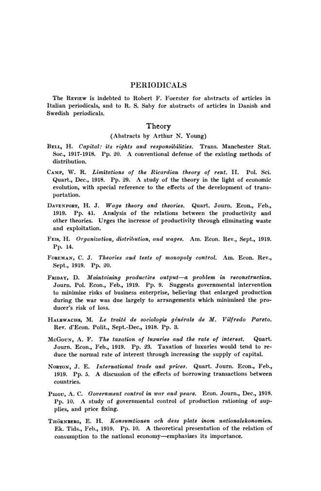

Tarifa por peça, monopólio e a pergunta: dividendo em ações é renda?
Leitura: 13 min
Mixter quer proteger por lei o pagamento por peça; Feis revê a teoria da distribuição; Foreman classifica os monopólios; Friday lê as estatísticas de renda de 1916; Seligman nega que dividendo em ações seja renda.


Em 1916, os contribuintes americanos com renda acima de 3.000 dólares declararam 8,35 bilhões de dólares de renda bruta. Um quarto disso eram dividendos. David Friday tira o número do primeiro volume de Statistics of Income, publicado pela Receita a partir das declarações daquele ano, e conclui que os lucros das empresas eram a fonte das grandes rendas e das grandes fortunas. Na mesma edição de setembro de 1919, Edwin R. A. Seligman pergunta se um tipo especial de dividendo, pago em ações da própria empresa, deveria entrar nessa conta.
A edição tem cinco artigos, todos sobre a divisão do produto e as regras que a governam. Charles W. Mixter propõe proteger por lei o pagamento por peça contra os cortes de tarifa; Herbert Feis argumenta que a organização de banqueiros e trabalhadores exige rever a teoria marginalista da distribuição; C. J. Foreman reconstrói as definições de monopólio dos tribunais ingleses e americanos e dos economistas; Friday examina as estatísticas de renda de 1916; e Seligman responde à pergunta que a Suprema Corte ia julgar no outono. Seguem-se resenhas, documentos, resumos de periódicos e notas.
Por que o corte da tarifa por peça destrói o incentivo que ela cria?
Charles W. Mixter (Clark College) · “Protection of Piece Rate” · pp. 455–467
Mixter descreve primeiro como se fixa uma tarifa por peça. Define-se o trabalho, estima-se o tempo necessário, aplica-se o salário-hora da categoria e acrescenta-se um bônus pelo esforço extra que o empregador quer obter. No exemplo, um lote de 500 peças leva cinco horas; a 40 centavos por hora, salário de 22 dólares numa semana de 55 horas, o lote vale 2 dólares; com bônus de 25%, 2,50 dólares, ou meio centavo por peça. Enquanto a tarifa não muda, todo tempo economizado vai para o trabalhador.
O problema é que o tempo quase sempre é estimado com folga, porque o trabalho não foi padronizado antes. Quando os ganhos disparam, a tarifa é cortada, seja porque o concorrente pagou menos, seja porque operários ganhariam mais que os mestres. Para Mixter, enquanto houver erro na fixação, haverá corte; nem o estudo de tempos da administração científica, em que ele acredita, elimina o erro, e a promessa escrita de nunca cortar “salvo se o trabalho mudar” abre espaço a evasões.
O efeito do corte sem salvaguardas é multar o trabalhador por trabalhar depressa. A resposta é a limitação deliberada da produção, que Mixter vê como guerra aberta ou disfarçada contra a produção, com enorme riqueza não criada.
Mixter cita um porta-voz sindical: “Um homem mostra a alma nua quando trabalha por peça.” (“A man shows his naked soul when he works at piece rate.”)
A proposta é que o Estado imponha regras de procedimento e publicidade, sem fixar salários: publicar as tarifas e seus elementos, contabilizar os ganhos por tarifa, declarar por quanto tempo cada tarifa não poderá ser reduzida e fixar de antemão o limite de cada revisão. A aplicação dependeria de negociação coletiva, com dirigentes sindicais no papel de advogados do trabalhador.
A organização de bancos e sindicatos invalida a teoria da distribuição?
Herbert Feis · “Organization, Distribution, and Wages” · pp. 468–481
Feis parte de uma constatação: a organização se espalhou pela produção, pelos bancos e pelos trabalhadores, mas os manuais mais usados ainda descrevem a distribuição como equilíbrio entre indivíduos isolados, nas margens. A crítica começa pelo capital. Feis aponta em Taussig duas definições, a de instrumentos concretos feitos pelo homem e a de série de adiantamentos aos trabalhadores, e argumenta que a segunda descreve melhor uma economia com bancos organizados: o capital é um poder de comando sobre trabalho e máquinas, apoiado em valores muito variados e dependente do sucesso futuro do empreendimento.
Se os bancos decidem quanto capital chega à indústria, a taxa de juros não se explica pela psicologia individual de poupança e risco, e a análise marginal se afasta da realidade. O mesmo vale para a terra: quando os donos se organizam, como no caso das terras de cranberry na Nova Inglaterra, surge algo parecido com renda de monopólio, que a análise marginal não acomoda.
Para Feis, as teorias gerais de distribuição simplificam demais os fatos: “Uma teoria servirá a um único universo.” (“One theory will fit but one universe.”)
No trabalho, a ideia de grupos não concorrentes não basta. Um grupo organizado vende seus serviços como unidade e, por isso, negocia com a importância da sua utilidade total, e não da marginal; Feis contesta assim a tese de Taussig de que a contribuição marginal de cada grupo fixa a remuneração de todos. O limite é a dependência mútua entre os grupos e a possibilidade de substituição. A conclusão é que os grupos maiores e mais mal pagos, os não qualificados, podem ser os menos dispensáveis, e por isso os que mais têm a ganhar com a organização.
Quando uma empresa grande passa a ser um monopólio ilegal?
C. J. Foreman (University of Arkansas) · “Theories and Tests of Monopoly Control” · pp. 482–501
Foreman parte da dúvida da própria Suprema Corte, que no caso da Standard Oil disse duvidar que fosse possível uma definição de monopólio capaz de cobrir todos os casos. Ele identifica seis atitudes dos tribunais ingleses e americanos e as compara com as dos economistas.
A primeira é a vantagem diferencial do direito comum antigo: o dono do único cais de um porto podia ter vantagem, desde que cobrasse preço razoável. Os economistas clássicos usaram ideia parecida para a renda da terra, de Adam Smith a Mill, e Senior a estendeu ao talento e aos processos secretos. A segunda é o privilégio concedido pelo rei, na definição de Coke. A terceira é o monopólio absoluto: a partir do caso Mitchell v. Reynolds, só o controle de um ramo em todo o território era monopólio, e a concorrência potencial de outros lugares bastaria como freio. Foreman diz que essa visão dominou os tribunais estaduais até 1875 e que manuais de Ely, Bullock, Seager, Taussig e F. M. Taylor ainda definiam monopólio pelo controle exclusivo da oferta.
A quarta é o monopólio parcial: tribunais de Illinois e Ohio passaram a anular acordos que suprimiam a concorrência ativa dentro de um mercado local, como uma associação para controlar a venda de sal em Ohio. A quinta é o monopólio incipiente, condenado pela tendência de suprimir a concorrência, ainda que o preço não tenha subido, e provado até por acordos tácitos e pela conduta posterior.
Foreman lista os testes que os tribunais aplicavam: o poder sobre o preço, o dano aos produtores, a ausência de concorrência, a intenção revelada por práticas de exclusão e a natureza da combinação. Para eles, o preço era sintoma, e não a doença. A sexta atitude é o monopólio de eficiência, nascido de custos menores: se elimina concorrentes e controla o preço, é ilegal; se não controla o preço, a regra da razão o protege. A conclusão é reclassificar os monopólios pelo método de controle do preço, separando o de eficiência, que reduz custos, do de escassez, que restringe a produção.
O que as primeiras estatísticas de renda revelaram?
David Friday (Washington, D. C.) · “Statistics of Income” · pp. 502–516
Friday saúda o volume Statistics of Income, compilado pela Receita com as declarações de renda de pessoas e empresas de 1916, como o início de uma nova época nas estatísticas de renda americanas. Pela primeira vez se podia saber quanto da renda individual vinha do trabalho e quanto da propriedade, que peso tinham os dividendos e quanto ganhava cada ocupação.
O número de declarações cresceu de 1914 a 1916 em ritmo maior quanto mais alta a faixa de renda. Friday conclui que os ricos ficaram mais ricos com a guerra europeia, e que o aumento foi tão forte nos estados com poucas grandes rendas quanto em Nova York. Nas faixas baixas, a evasão distorcia a conta: depois que a isenção caiu, em 1917, as declarações entre 3.000 e 4.000 dólares passaram de 200% do número de 1916.
Nas empresas, das 341.253 que declararam, 134.269 não tiveram lucro líquido. As que tiveram somaram 8,77 bilhões de dólares, 280,5% do total de 1909. O lucro industrial cresceu 150% de 1913 a 1916, e o das concessionárias de serviço público, 50%. Ferro e aço, automóveis e poços de petróleo, gás e sal tiveram, juntos, mais lucro que todas as ferrovias e serviços públicos.
Friday aponta os limites: a tabela de ocupações soma a renda de todas as fontes, o que põe onze clérigos acima de 50.000 dólares, e o volume não traz capital nem dívida das empresas. Mesmo assim, conclui, é a contribuição mais importante às estatísticas de renda já publicada no país.
Um dividendo pago em ações é renda?
Edwin R. A. Seligman (Columbia University) · “Are Stock Dividends Income?” · pp. 517–536
A lei de 1913 foi interpretada pela Receita como se tributasse os dividendos em ações, e a de 1916 o fez de forma expressa. A Suprema Corte decidiu depois que a lei de 1913 não os incluía, e um novo caso, Eisner v. Macomber, sobre a lei de 1916, seria rediscutido no outono de 1919. Seligman trata a questão do ponto de vista estritamente econômico.
Ele começa pelos conceitos. Renda é um fluxo de satisfações, ou de dinheiro, num período; capital é um estoque, cujo valor é a renda futura capitalizada. Para haver renda, o ganho precisa ser realizado e separado da fonte, como o potro nascido se separa da égua e o fruto da árvore. Um aumento no valor do capital só é renda quando é a acumulação de renda já recebida; nos demais casos, é renda incipiente, um ganho no papel, até ser realizado pela venda.
Nos três casos, o patrimônio de cada acionista vale 15.000 dólares. Mas só no dividendo em dinheiro há separação e realização. Na reserva e no dividendo em ações, o ativo da empresa continua indiviso, e o acionista recebe apenas mais papéis representando a mesma parte. Se vender as novas ações, o ganho será renda, mas o mesmo valeria para quem vendesse parte das ações depois de um aumento de reserva. A distribuição em ações de outra empresa, por sua vez, é renda: houve separação de ativos.
A conclusão de Seligman é taxativa: “Dividendo em dinheiro é renda; dividendo em ações não é renda.” (“A cash dividend is income; a stock dividend is not income.”)
O que mais há na edição?
As resenhas incluem Economics: An Introduction for the General Reader, de Henry Clay, e Industry and Trade, de Avard Longley Bishop e Albert Galloway Keller, ambos por Harvey A. Wooster; Foreign Financial Control in China, de T. W. Overlach, por Charles Hodges; Commercial Russia, de Beable, por Harry R. Tosdal; Principles of Accounting, de Paton e Stevenson, e Cost Accounting, de Nicholson e Rohrbach, por Stanley E. Howard; Public Utility Rate Fixing, de Grunsky, por John Bauer; The Arbitral Determination of Railway Wages, de J. Noble Stockett Jr., por M. B. Hammond; Unemployment and American Trade Unions, de D. P. Smelser, por William M. Leiserson; Industry and Humanity, de W. L. Mackenzie King, por George Milton Janes; The Six Hour Day and Other Industrial Questions, de Lord Leverhulme, por N. I. Stone; The Meaning of National Guilds, de Maurice B. Reckitt e C. E. Bechhofer, por H. Gordon Hayes; duas monografias de G. D. H. Cole sobre sindicalismo e pagamento de salários, por D. A. McCabe; dois estudos de Willoughby sobre orçamento público, do Institute for Government Research, por F. B. Garver; e The Division of the Product of Industry, de Bowley, sobre a renda nacional antes da guerra, por Willford I. King. Os documentos tratam de um estudo da Tariff Commission sobre reciprocidade e tratados comerciais, do Bank of North Dakota, de preços e rendas na Alemanha durante a guerra, do sistema orçamentário das Filipinas e da comissão orçamentária de Michigan. As notas informam que a reunião anual da associação, prevista para Lexington, seria em Chicago, a partir de 29 de dezembro, e que uma comissão examinaria a proposta de Irving Fisher de criar um instituto de pesquisa econômica.
Na minha leitura
Na minha leitura, a edição de setembro de 1919 trata de regras de repartição. Mixter mostra que uma tarifa por peça é um contrato incompleto: como o tempo de referência é mal medido, o empregador acaba por revê-la, e o trabalhador antecipa a revisão limitando a produção. A solução que propõe é de informação, e não de preço: publicar os elementos da tarifa e as regras de revisão. Feis e Foreman fazem a mesma pergunta em escala maior, sobre quando a ação coordenada de bancos, sindicatos ou empresas muda o resultado que o mercado individual produziria.
Friday e Seligman tratam do outro lado: como medir e como definir a renda que se reparte. Friday mostra o que se aprende quando o Estado publica o que arrecada; Seligman, que a base de um imposto depende de uma distinção conceitual, entre ganho realizado e valorização do capital, que a contabilidade sozinha não resolve.
Glossário
- Pagamento por peça
- remuneração por unidade produzida, e não por hora trabalhada.
- Corte de tarifa
- redução do preço pago por peça depois que o trabalhador passa a produzir mais depressa.
- Estudo de tempos
- medição detalhada do tempo de cada operação, base da administração científica de Taylor.
- Grupos não concorrentes
- categorias de trabalhadores entre as quais a mobilidade é tão pequena que seus salários se formam separadamente.
- Produtividade marginal
- acréscimo de produto obtido com a última unidade de um fator; base da teoria marginalista da distribuição.
- Regra da razão
- doutrina da Suprema Corte americana de que a lei antitruste proíbe só as restrições não razoáveis ao comércio.
- Monopólio de eficiência
- posição dominante obtida por custos menores, sem restringir a produção.
- Dividendo em ações
- distribuição de novas ações da própria empresa aos acionistas, em vez de dinheiro.
- Realização
- conversão de um ganho em algo separado da fonte, como dinheiro recebido ou bem vendido.
Artigos (5)
- Protection of Piece Rate — Charles W. Mixter (Clark College) (pp. 455–467) · resenha acima · JSTOR
- Organization, Distribution, and Wages — Herbert Feis (pp. 468–481) · resenha acima · JSTOR
- Theories and Tests of Monopoly Control — C. J. Foreman (University of Arkansas) (pp. 482–501) · resenha acima · JSTOR
- Statistics of Income — David Friday (Washington, D. C.) (pp. 502–516) · resenha acima · comentário completo · JSTOR
- Are Stock Dividends Income? — Edwin R. A. Seligman (Columbia University) (pp. 517–536) · resenha acima · comentário completo · JSTOR
Resenhas (14)
- Henry Clay, Economics: An Introduction for the General Reader — Harvey A. Wooster (pp. 537–541). Introdução à economia para o leitor geral. JSTOR
- T. W. Overlach, Foreign Financial Control in China — Charles Hodges (New York University) (pp. 543–548). O controle financeiro estrangeiro na China. JSTOR
- Avard Longley Bishop e Albert Galloway Keller, Industry and Trade — Harvey A. Wooster (pp. 548–550). Manual sobre indústria e comércio. JSTOR
- Beable, Commercial Russia — Harry R. Tosdal (pp. 560–562). Panorama comercial da Rússia. JSTOR
- Paton e Stevenson, Principles of Accounting; Nicholson e Rohrbach, Cost Accounting — Stanley E. Howard (Princeton University) (pp. 563–568). Dois manuais de contabilidade geral e de custos. JSTOR
- Grunsky, Public Utility Rate Fixing — John Bauer (pp. 568–571). Estudo sobre a fixação de tarifas de serviços públicos. JSTOR
- J. Noble Stockett Jr., The Arbitral Determination of Railway Wages — M. B. Hammond (Ohio State University) (pp. 576–579). A arbitragem de salários ferroviários, ensaio premiado pelo concurso Hart Schaffner & Marx. JSTOR
- D. P. Smelser, Unemployment and American Trade Unions — William M. Leiserson (Working Conditions Service, United States Department of Labor) (pp. 579–582). As políticas dos sindicatos americanos diante do desemprego. JSTOR
- W. L. Mackenzie King, Industry and Humanity — George Milton Janes (University of North Dakota) (pp. 582–584). Livro sobre indústria e relações de trabalho. JSTOR
- Lord Leverhulme, The Six Hour Day and Other Industrial Questions — N. I. Stone (pp. 584–587). Ensaios de um industrial sobre jornada de seis horas e outras questões do trabalho. JSTOR
- Maurice B. Reckitt e C. E. Bechhofer, The Meaning of National Guilds — H. Gordon Hayes (Yale University) (pp. 587–589). Exposição do socialismo de guildas. JSTOR
- G. D. H. Cole, An Introduction to Trade Unionism; The Payment of Wages — D. A. McCabe (pp. 589–591). Duas monografias sobre sindicalismo e sobre pagamento por resultados. JSTOR
- Willoughby, The Problem of a National Budget; The Movement for Budgetary Reform in the States — F. B. Garver (pp. 598–602). Dois estudos do Institute for Government Research sobre orçamento público. JSTOR
- Bowley, The Division of the Product of Industry — Willford I. King (pp. 617–620). Análise da renda nacional antes da guerra. JSTOR
Novos livros (16)
- New Books (pp. 541–543). Lista de livros novos: obras gerais, teoria e sua história. JSTOR
- New Books (pp. 550–555). Lista de livros novos: história econômica e geografia. JSTOR
- New Books (pp. 556–557). Lista de livros novos: agricultura, mineração, florestas e pesca. JSTOR
- New Books (pp. 558–559). Lista de livros novos: indústrias manufatureiras. JSTOR
- New Books (pp. 559–560). Lista de livros novos: transportes e comunicações. JSTOR
- New Books (pp. 562–563). Lista de livros novos: comércio e crises comerciais. JSTOR
- New Books (pp. 571–576). Lista de livros novos: capital e organização capitalista; trabalho. JSTOR
- New Books (pp. 591–596). Lista de livros novos: trabalho e organizações trabalhistas; moeda, preços, crédito e bancos. JSTOR
- New Books (pp. 596–598). Lista de livros novos: moeda, preços, crédito e bancos. JSTOR
- New Books (pp. 603–606). Lista de livros novos: finanças públicas, tributação e tarifa. JSTOR
- New Books (pp. 606–607). Lista de livros novos: população e migração. JSTOR
- New Books (pp. 607–614). Lista de livros novos: problemas sociais e reformas. JSTOR
- New Books (pp. 614). Lista de livros novos: seguros e pensões. JSTOR
- New Books (pp. 614–615). Lista de livros novos: pauperismo, caridade e assistência. JSTOR
- New Books (pp. 615–617). Lista de livros novos: socialismo e empresas cooperativas. JSTOR
- New Books (pp. 620–621). Lista de livros novos: estatística e seus métodos. JSTOR
Documentos, periódicos e notas (3)
- Documents, Reports, and Legislation (pp. 622–642). Reciprocidade e tratados comerciais, o Bank of North Dakota, preços e rendas na Alemanha na guerra e orçamentos públicos. JSTOR
- Periodicals (pp. 643–668). Resumos de artigos de periódicos, por área. JSTOR
- Notes (pp. 669–680). Mudança da reunião anual para Chicago, decisões do comitê executivo e notícias acadêmicas. JSTOR
Fontes
- Protection of Piece Rate (pp. 455–467). JSTOR · Internet Archive (PDF)
- Organization, Distribution, and Wages (pp. 468–481). JSTOR · Internet Archive (PDF)
- Theories and Tests of Monopoly Control (pp. 482–501). JSTOR · Internet Archive (PDF)
- Statistics of Income (pp. 502–516). JSTOR · Internet Archive (PDF)
- Are Stock Dividends Income? (pp. 517–536). JSTOR · Internet Archive (PDF)
- [untitled] The American Economic Review, (1919-09-01), pages 537-541 (pp. 537–541). JSTOR · Internet Archive (PDF)
- New Books (pp. 541–543). JSTOR · Internet Archive (PDF)
- [untitled] The American Economic Review, (1919-09-01), pages 543-548 (pp. 543–548). JSTOR · Internet Archive (PDF)
- [untitled] The American Economic Review, (1919-09-01), pages 548-550 (pp. 548–550). JSTOR · Internet Archive (PDF)
- New Books (pp. 550–555). JSTOR · Internet Archive (PDF)
- New Books (pp. 556–557). JSTOR · Internet Archive (PDF)
- New Books (pp. 558–559). JSTOR · Internet Archive (PDF)
- New Books (pp. 559–560). JSTOR · Internet Archive (PDF)
- [untitled] The American Economic Review, (1919-09-01), pages 560-562 (pp. 560–562). JSTOR · Internet Archive (PDF)
- New Books (pp. 562–563). JSTOR · Internet Archive (PDF)
- [untitled] The American Economic Review, (1919-09-01), pages 563-568 (pp. 563–568). JSTOR · Internet Archive (PDF)
- [untitled] The American Economic Review, (1919-09-01), pages 568-571 (pp. 568–571). JSTOR · Internet Archive (PDF)
- New Books (pp. 571–576). JSTOR · Internet Archive (PDF)
- [untitled] The American Economic Review, (1919-09-01), pages 576-579 (pp. 576–579). JSTOR · Internet Archive (PDF)
- [untitled] The American Economic Review, (1919-09-01), pages 579-582 (pp. 579–582). JSTOR · Internet Archive (PDF)
- [untitled] The American Economic Review, (1919-09-01), pages 582-584 (pp. 582–584). JSTOR · Internet Archive (PDF)
- [untitled] The American Economic Review, (1919-09-01), pages 584-587 (pp. 584–587). JSTOR · Internet Archive (PDF)
- [untitled] The American Economic Review, (1919-09-01), pages 587-589 (pp. 587–589). JSTOR · Internet Archive (PDF)
- [untitled] The American Economic Review, (1919-09-01), pages 589-591 (pp. 589–591). JSTOR · Internet Archive (PDF)
- New Books (pp. 591–596). JSTOR · Internet Archive (PDF)
- New Books (pp. 596–598). JSTOR · Internet Archive (PDF)
- [untitled] The American Economic Review, (1919-09-01), pages 598-602 (pp. 598–602). JSTOR · Internet Archive (PDF)
- New Books (pp. 603–606). JSTOR · Internet Archive (PDF)
- New Books (pp. 606–607). JSTOR · Internet Archive (PDF)
- New Books (pp. 607–614). JSTOR · Internet Archive (PDF)
- New Books (pp. 614). JSTOR · Internet Archive (PDF)
- New Books (pp. 614–615). JSTOR · Internet Archive (PDF)
- New Books (pp. 615–617). JSTOR · Internet Archive (PDF)
- [untitled] The American Economic Review, (1919-09-01), pages 617-620 (pp. 617–620). JSTOR · Internet Archive (PDF)
- New Books (pp. 620–621). JSTOR · Internet Archive (PDF)
- Documents, Reports, and Legislation (pp. 622–642). JSTOR · Internet Archive (PDF)
- Periodicals (pp. 643–668). JSTOR · Internet Archive (PDF)
- Notes (pp. 669–680). JSTOR · Internet Archive (PDF)
- Sumário da edição no JSTOR: The American Economic Review, vol. 9, nº 3.
Documento em domínio público (EUA, publicado antes de 1931), via JSTOR Early Journal Content e Internet Archive. Resumo e comentário do autor deste site, sem afiliação com a American Economic Association. Encontrou um erro? Escreva: a correção é publicada no próprio texto, com data.
← Nº 158 · A lei da receita de 1918, o dólar estável e a terra do Lácio Nº 160 · Manual de 1919: a lista de sócios depois da guerra →